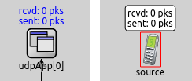
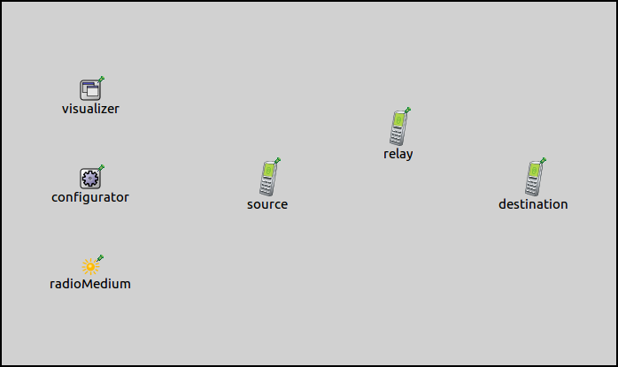
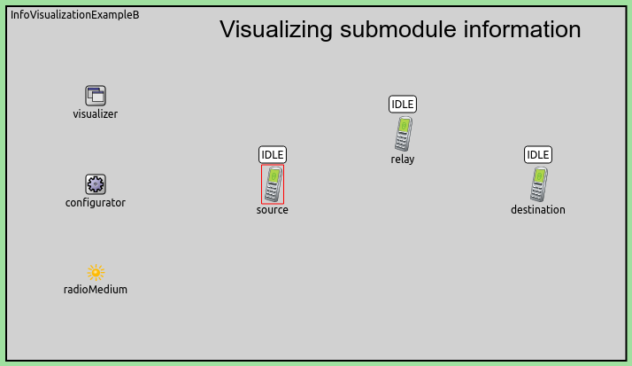
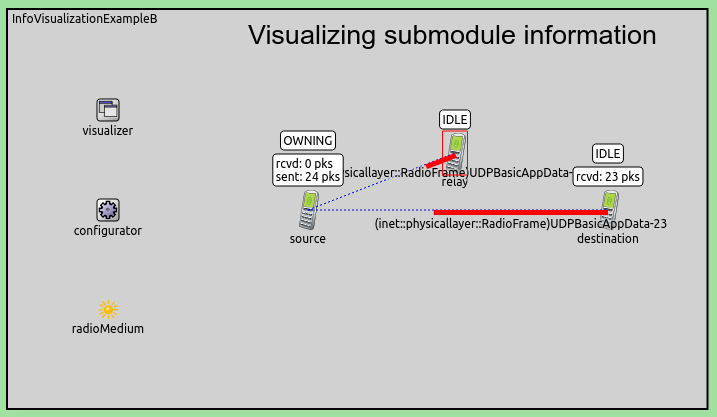

it's difficult to see information hidden in submodules deep down the module treeVarious compound modules in INET contain submodules that display information about their state in the graphical runtime environment. This is difficult to see, because this information is hidden deep in the module tree. One has to enter the compound modules or drill down in the object inspector to see this information. State information of important submodules can be visualized at containing network nodes, at the top level of the network. This makes such information conveniently available at a glance, without the need to open graphical views or go into compound modules. This example contains a configuration that demonstrates visualization of nodes' IEEE 802.11 channel access state.
The InfoVisualizer module can visualize state information displayed by various submodules. This information is visualized at the contaning network node, on the top level canvas. The following image illustrates this with the example of the UDP submodule:
The image on the left shows the state information displayed by the UDP app. To see this, one has to go into the containing node. The image on the right shows the same information displayed above the containing node, on the top level canvas.
The submodules whose states should be visualized can be selected with the visualizer's modules parameter. This parameter takes full path module names. Wildcards can be used to select a certain submodule in multiple nodes. Additionally, one can specify multiple submodules for a node.
The visualizer can display module information in various ways, selected with the format parameter. This parameter takes a format string, which can contain the following directives:
On the example image above, the display string text is visualized, selected with the '%d' directive.
The network for the simulation is the following:
It contains 3 AdhocHosts arranged in a simple chain. It also contains an IPv4NetworkConfigurator, an Ieee80211ScalarRadioMedium, and an IntegratedVisualizer module. The communication ranges of hosts is determined by their radio transmitter power, which is configured so that hosts can only reach adjacent hosts in the chain. Hosts' routing tables are set up accordingly, thus packets going between source and destination are routed via relay.
TODO: parameters should be italic for consistency
The visualization is enabled by setting the modules parameter. The visualizer is configured to visualize nodes' channel access state. This information is contained in each node's Contention module. The location of the Contention module is AdhocHost/wlan/mac:
The format parameter is set to display the submodule's display string text:
Additionally, source is configured to send UDP packets to destination.
When the simulation is run, the channel access state is displayed above the nodes:
The visualization changes to reflect the changes in the access state. It takes on the following values:
TODO: do we need this ?
The following animation illustrates as a packet from source makes its way to destination:


TODO: what is happening on the animation
When source starts transmitting the UDP packet, its state changes to OWNING. The relay host's state is IDLE while receiving this packet. After it has received it, the state changes to IFS+BKOFF, then, while transmitting the ACK, it changes to DEFER. Meanwhile, the state of the source host remains OWNING, because it has the channel for the duration of the PACKET-ACK exchange. The relay host's state is DEFER because it wants to send the packet it just received to the destination host. After the ACK, the relay host has the channel. The state of the destination host remains IDLE, as it doesnt want to send any packets.
The source host transmits an UDP packet to relay host, which ACKs it. While this happens, the state of the source hosts OWNING, as it owns the channel for the duration of the packet-ACK exchange. When the relay host receives the UDP packet, its state changes to IFS+BKOFF. It then transmits the ACK, while its state turns to DEFER, because it already has the packet it wants to relay to the destination host. After the ACK, the relay host gets the channel. The state of the destination host remains IDLE, as it doesn't transmit any packets, just ACKs the ones it receives.
Multiple submodules can be specified with the visualizer's modules parameter. For example, the UDP application's state can be displayed in addition to the channel access state:
This would look like the following:
Here, the visualizer displays the UDP application's number of sent and received packets.
TODO: some kind of conclusion like in the other samples